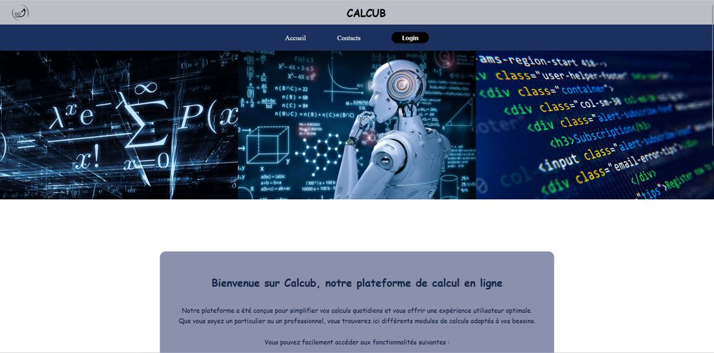
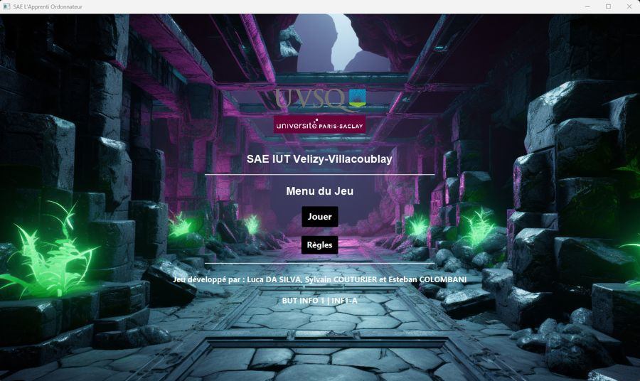

Ingénieur DevSecOps
Pipelines CI/CD GitLab, conteneurs Docker, supervision des services et suivi des vulnérabilités sur des systèmes Linux.
Alternant ingénieur DevSecOps
Je construis, automatise et sécurise des infrastructures. Élève ingénieur à l'EFREI en Réseaux et Sécurité.
Pipelines CI/CD GitLab, conteneurs Docker, supervision des services et suivi des vulnérabilités sur des systèmes Linux.
Chatbot JavaScript intégré à GLPI : création automatique de tickets et prise en charge d'environ 10 % des demandes récurrentes, avec une base de connaissances évolutive déployée en conditions réelles.
Outil de type Trello sous Excel (VBA), avec interfaces simples pour utilisateurs non techniques et synchronisation entre services. Adopté par environ 10 services.
Réseaux et Sécurité, en apprentissage. Unix et scripting, cloud AWS, virtualisation, conteneurs, sécurité des infrastructures.
Parcours Réalisation d'applications : web, bases de données, systèmes distribués.
Mathématiques, NSI, Sciences de l'Ingénieur.
Plateforme web de calcul distribué sur 5 Raspberry Pi : MPI, sockets TCP, rôles, logs, monitoring et SSH sécurisé.
Automatisation des tickets IT et réponses aux demandes récurrentes grâce à une base de connaissances enrichissable.
Plateforme de modules de calcul : probabilités, chiffrement RC4, polynômes, import CSV, rôles et journalisation.

Jeu de réflexion avec menu, scénarios, tri par sélection et tri heuristique.

Base relationnelle, requêtes SQL complexes et analyse sous Excel avec tableaux croisés dynamiques.
Faites glisser, utilisez les flèches ou cliquez sur un projet.
Discipline et rigueur.
Esprit d'équipe et adaptation.
Décision rapide, logique système.
Français (langue maternelle) · Anglais C1 · Portugais C1 · Espagnol B2.
Un projet, une opportunité, une question ? Écrivez-moi sur LinkedIn.